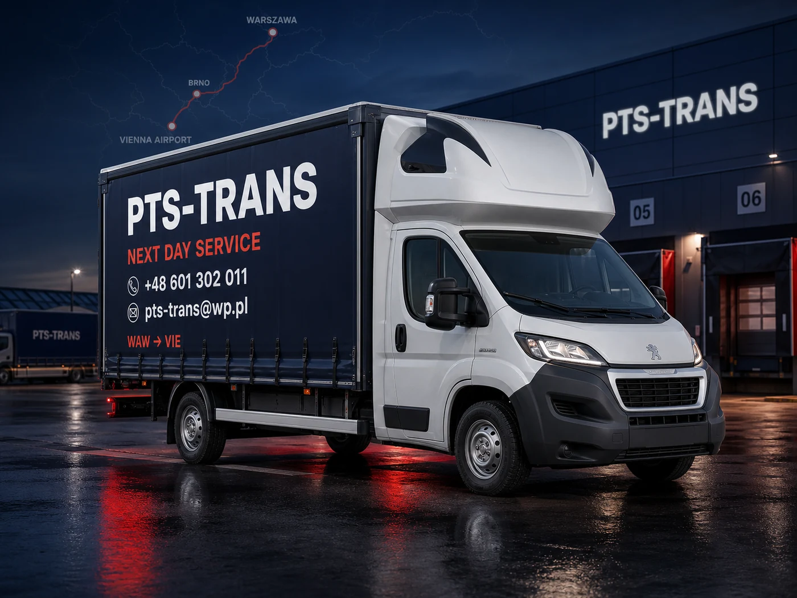
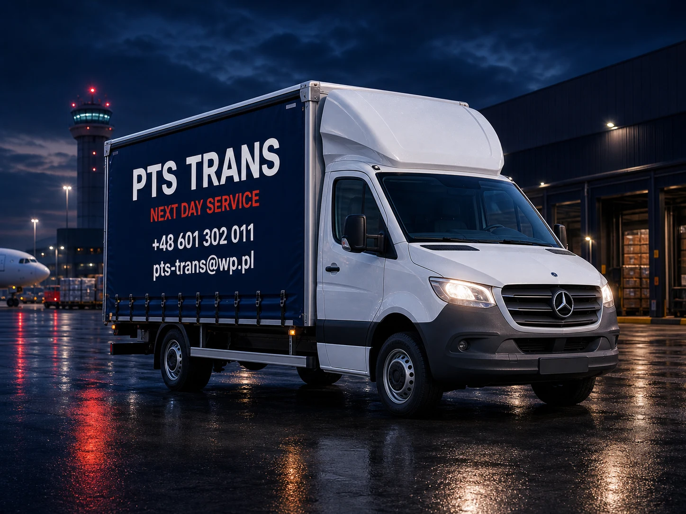
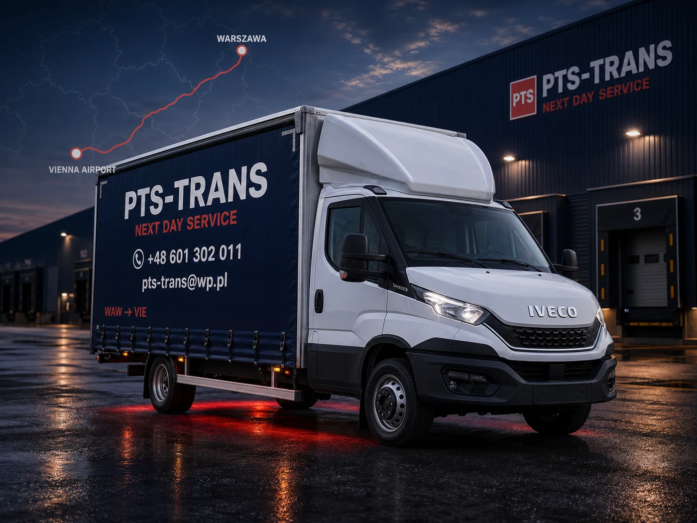
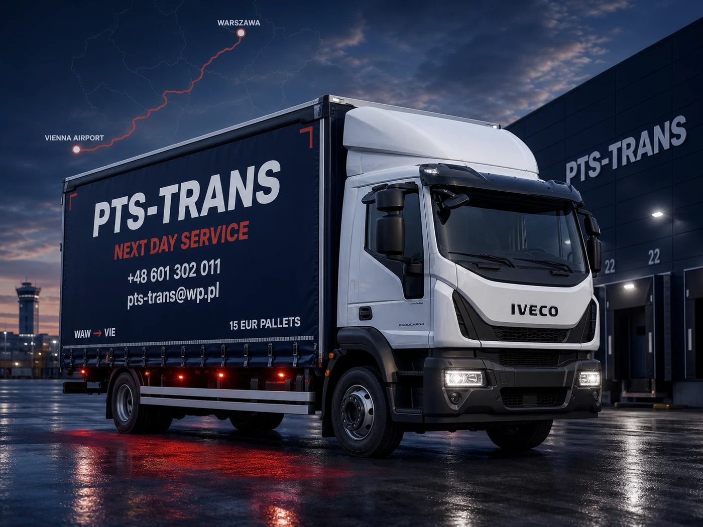

Palety NEXT day
Palety ekspresowe i większe partie towaru, także autami do 15 palet EUR.
Spedycja 24h • WAW → BTS / VIE
Codzienne transporty z Warszawy przez Brno na relacje WAW-VIE i WAW-BTS: palety, części, paczki i cargo lotnicze z dostawą następnego dnia.
Dla kogo
PTS TRANS obsługuje firmy, które nie mogą czekać na przypadkową spedycję: produkcję, magazyny, operatorów cargo, serwisy i dystrybucję. Relacje WAW-VIE i WAW-BTS są osią oferty, a Brno pracuje jako punkt wspierający po drodze.
Palety ekspresowe i większe partie towaru, także autami do 15 palet EUR.
Pilne części, paczki techniczne i towary, które blokują produkcję albo serwis.
Codzienne odbiory z Vienna Cargo Airport i dostawy do firm w Polsce.
Pilne zlecenia B2B na relacjach Warszawa-Wiedeń i Warszawa-Bratysława, planowane pod następny dzień.
Jak działa trasa
Na trasach Warszawa-Wiedeń i Warszawa-Bratysława liczy się nie tylko auto, ale też rytm pracy kierowcy. PTS TRANS wykorzystuje zaplecze noclegowe po drodze, żeby planować odpoczynek zgodnie z wymogami i utrzymać realną gotowość do pilnych transportów.
Szybkie przejęcie ładunku od firmy, magazynu albo lotniska i dobór auta do zlecenia.
Relacja ma stały rytm i punkty po drodze, zamiast każdorazowego budowania trasy od zera.
Dostawa następnego dnia do Bratysławy, Wiednia lub punktu B2B w okolicy.

Wien CITY, CARGO
Dla cargo lotniczego kluczowy jest szybki odbiór po stronie Wiednia. PTS TRANS jest codziennie na Wien CITY, CARGO / Vienna Cargo Airport i zabiera ładunki dalej na trasę do firm w Polsce, Czechach i Słowacji.
Główny kierunek cargo: odbiór z Wien CITY, CARGO / Vienna Cargo Airport i szybka dostawa do klienta B2B.
Mapa operacyjna
Warszawa-Wiedeń i Warszawa-Bratysława są równorzędnymi produktami. Brno jest naturalnym punktem po drodze, a Wien CITY, CARGO / Vienna Cargo Airport jest stałym punktem odbioru dla cargo i produkcji.


Flota na relację
Na relacjach WAW-VIE i WAW-BTS liczy się dopasowanie przestrzeni, terminu i punktu odbioru. Flota obsługuje małe pilne części, palety, gabaryty i większe partie do 15 palet EUR.

Bus 3.5t do szybkich części, paczek i mniejszych partii na relacjach WAW-VIE i WAW-BTS.

Plandeka do przewozów next day, gdy liczy się szybki załadunek i przewidywalna trasa.

Elastyczne auto do cargo, gabarytów i punktów odbioru przy trasie lub lotnisku.

Zabudowa jak z referencji: większa przestrzeń pod partie paletowe i transport do 15 palet EUR.
Spedycja 24h
W zapytaniu podaj punkt odbioru, punkt dostawy, godzinę gotowości, wymiary, wagę oraz liczbę palet lub paczek. Najszybciej potwierdzimy zlecenia na relacjach WAW-VIE, WAW-BTS i z odbiorem z Wien CITY, CARGO. Realizujemy też zlecenia Super Ekspresowe na specjalne życzenie, z indywidualną wyceną.
Sławomir Szambelan
ul. Wakacyjna 3
05-090 Raszyn / Rybie
Trans nr: 303457-1
Baza i magazyn: ul. Jaworskiego 8, 05-090 Raszyn
Uczestnik Programu RZETELNA Firma